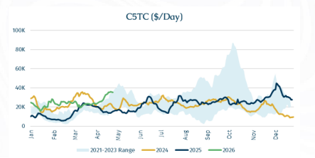
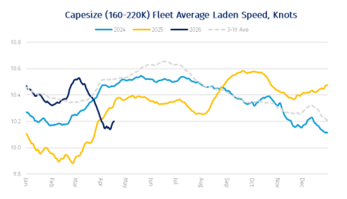
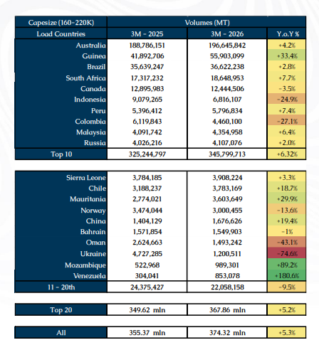
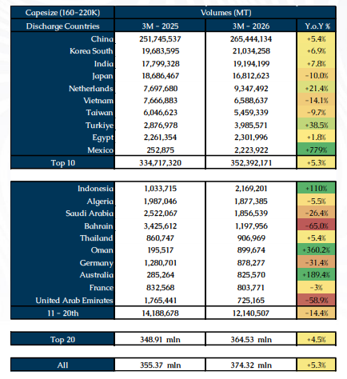
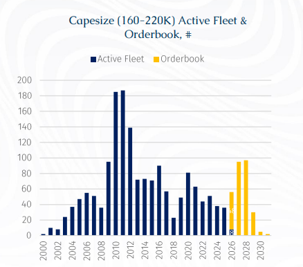
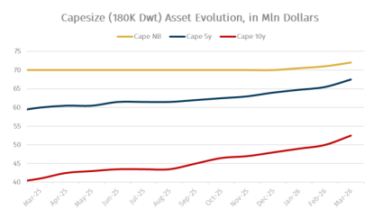
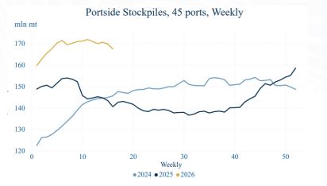
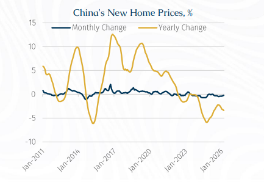

All said and done,The C5TC (basis 180,000 DwtK) averages for this month is currentlynow staring at around $30,000/day, making this month the strongest April since 2021 ($29,798/day). The difference between C5TC April 2025 and April 2026 is a whopping $14,000/day, an affirmation ofn how Capesize dynamics have structurally morphed.

Stripping out bunker-related distortions from the Iran conflict, there is little evidence of a material deterioration in underlying Capesize fundamentals in 1Q26. In fact, high bunker prices caused a sharp reversal of fleet speed in March which indirectly tightened tonnage availability when long-haul voyages are in vogue.

For context, in 1Q2026, VLOC (>220,000 DwtK) shipments grew by 1.1% y-o-y, while Capesize (160-220,000 DwtK) shipments grew by a robust 5.3% y-o-y to 374.3 mln mt. Growth is slightly more pronounced on the loading side for the top exporters, while the demand side remains heavily concentrated in Asia, particularly China, which continues to dominate trade flows.

On the loading side, the top ten origins increased shipments by 6.3% y-o-y, outpacing overall market growth of 5.3% and reinforcing their structural importance. Australia remains the dominant supplier by a wide margin, with volumes rising 4.2% to nearly 197 million tonnesmt, accounting for more than half of total Capesize loadings, partly reflecting a low base last year due to cyclone disruptions. The standout performer among major exporters is Guinea, where volumes surged by over 33%, consolidating its position as the second-largest Capesize employer, driven by the continued ramp-up in bauxite exports. Brazil posted modest growth of 2.8%, indicating relative stability in iron ore exports, while South Africa and Peru also recorded steady gains.
However, this growth is partly offset by contractions across several key loading countriesorigins. Indonesia and Colombia both recorded sharp declines of around 25–27%, reflecting policy-driven supply adjustments. In Colombia’s case, exports were further disrupted by the 2024 suspension of coal shipments to Israel following the Gaza conflict, alongside intensifying competition from suppliers closer to Pacific demand centres. This coincided with softer coal demand from China and India in 1Q26. Canada’s exports (mainly iron ore) also saw a mild decline.
Beyond the top tier, shipments from second-tier exporters ranked 11th to 20th fell by 9.5%, suggesting that growth is becoming increasingly concentrated among the largest producers. Within this group, trends remain highly uneven: Mozambique and Venezuela posted strong gains from low bases, while Ukraine and Oman saw steep declines, underscoring the continued impact of geopolitical disruptions on marginal supply.

On the discharge side, demand growth is more evenly distributed but remains overwhelmingly Asia-centric. The top ten importers grew by 5.3% y-o-y, closely tracking the global average. China alone absorbed over 265 million tonnes, growing by 5.4% and maintaining its dominant position with roughly 70% of total Capesize discharge volumes. Notably, this growth came despite a sharp 55.3% decline in coal arrivals, with increases in iron ore and bauxite more than offsetting the shortfall. This underscores the continued centrality of Chinese raw material demand to the Capesize segment.
Elsewhere in Asia, demand trends were mixed. South Korea and India recorded solid growth of 6.9% and 7.8%, respectively. In contrast, Japan and Taiwan saw a combined contraction of around 10%, while Vietnam declined more sharply by 14.1%. Meanwhile, emerging importers gained traction, with Indonesian arrivals doubling, pointing to subtle shifts in regional demand dynamics. On the other hand, significant contractions in Middle East countries such as Bahrain, Saudi Arabia and the UAE reflect the consequences of the ongoing Iran conflict.

Meanwhile, fleet growth is constrained, with only 8 of 56 scheduled Capesize newbuilding deliveries completed by mid-April, supporting current tonnage tightness. This strength in spot performance has also lifted asset values, especially vintage ones for bauxite trades, with 10-year-old Capesize units rising to about $53 million from $41 million a year ago, with the magnitude in price appreciation slightly exceeding that of a 5-year-old counterparty.

Nonetheless, downside risks remain and are likely to materialise with a lag. On the cargo supply side, Guinea presents a growing source of uncertainty, especially with the West African rainy season approaching. FOB netbacks for bauxite have been squeezed to marginal levels amid high Capesize freight rates and weaker CFR China prices, following strong export volumes in 1Q26. This raises the risk of export moderation, which could weigh on Atlantic Capesize demand later this year. The outlook is further pressured by higher bunker costs (albeit moderated over the past two weeks) linked to Middle East developments and a diesel shortage in Guinea, critical for mining operations (including the highly heralded Simandou iron ore project).
For context, Guinea’s power generation, particularly for mining operations, is heavily reliant on diesel. With no domestic oil production or refining capacity, the country depends entirely on imported refined products, leaving its energy supply chain highly exposed to disruptions. Some relief has emerged from increased regional supply, notably from Nigeria’s Dangote refinery, which has ramped up exports to neighbouring markets.
At the same time, policy risks over the mid-long-term horizon are intensifying. The government is pushing to expand domestic alumina processing and has taken a firmer stance on enforcement, including revoking licenses for non-compliance. The August 2025 withdrawal of EGA’s Guinea Alumina Corporation license, later transferred to state-owned Nimba Mining, highlights this shift. Domestically, Guinea aims to build 5 to 6 refineries by 2030, targeting around 7 mln tonnes of alumina capacity. With high-grade bauxite requiring roughly 2 to 2.5 tonnes per tonne of alumina, stricter enforcement could reduce future export upside.

It is also worth noting that the increase in China’s iron ore imports, supported by softer prices between January and February 2026, has largely been absorbed into inventories rather than translating into higher steel production. Since bottoming in late February, CFR China 62% iron ore prices have rebounded to around $110/mt per tonne as of last week, partly reflecting the impact of the Middle East conflict (via heightened voyage rates).
Elevated inventory levels could, however, act as a drag on import demand in 2H26 if end-user steel consumption fails to strengthen, as mills may draw down existing stockpiles rather than sustain current import volumes.
Pivoting to end-user demand, oil driven stagflation could weigh on industrial output and bulk demand as prolonged disruption to the Strait of Hormuz risks broader demand destruction and inventory drawdownsa global macroeconomic slowdown. The IMF’s latest assessment is explicit that the war has already weighed on the world economy: “Absent the war, global growth would have been revised upward” and the “downward revision for 2026 largely reflects the disruptions from the conflict in the Middle East.” The IMF warns that a longer shutdown would disrupt the global economy “more deeply and for longer”; in its adverse scenario, global growth falls to 2 to 2.5% in 2026, while research from the Federal Reserve Bank of Dallas Fed research finds that a Hormuz closure removing close to 20% of global oil supplies could cut global real GDP growth by an annualized 2.9 percentage points in the affected quarter.
Furthermore, the exact colour of China’s economy remains a key uncertainty. Although its 1Q26 GDP growth came in at 5.0% y-o-y, the quarterly headline concealed a clear loss of momentum within the period. In January–February, activity was relatively firm, with industrial production up 6.3% y-o-y, services up 5.2%, retail sales up 2.8%, and exports surging about 21.8%.; by March, hHowever, by March, the picture had softened, with industrial production easing to 5.7%, retail sales slowing to 1.7%, manufacturing PMI at 50.8, and export growth dropping to 2.5%.

According to Reuters calculations based on National Bureau of Statistics data, China’s new home prices fell 0.2% month-on-month in March, following a 0.3% decline in February. On an annual basis, prices dropped 3.4%, worsening from February’s 3.2% fall and marking the steepest decline in ten months.
This continued weakness underscores that strains in China’s property sector remain far from resolved, despite repeated pledges from top policymakers to stabilise the market. The government has introduced multiple rounds of support measures to revive the sector - once a key engine of economic growth - including calls for more targeted, city-specific policies aimed at curbing new housing supply, reducing excess inventory, and improving the overall balance between supply and demand.
Hence, that March moderation appears to reflect both domestic and external factors: weak household demand and property-related caution at home, plus softer overseas demand and higher energy uncertainty linked to the Iran conflict abroad.
Lastly, if the Strait of Hormuz disruption extends into 2H26, the implications for China are likely to become more pronounced. Despite recent stockbuilding, a prolonged closure would raise imported energy costs, compress industrial margins, and weigh on transport and petrochemical sectors, while also dampening external demand through slower global growth. A broader slowdown across Asia would further reduce demand for Chinese exports, particularly from economies less insulated than China.
Against this backdrop, whether the 5.3% y-o-y growth in Capesize shipments seen in 1Q26 can be sustained through the remainder of the year will be a key barometer for C5TC’s medium-term upside. This is further tempered by a backloaded delivery schedule in 2H26, which is likely to cap freight upside into year-end.